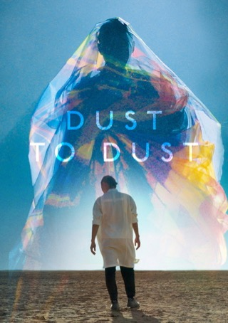

About the film

Renowned Japanese fashion designer Yuima Nakazato is a key figure in the ethical manufacturing movement. As the second Japanese designer ever invited to Paris Haute Couture Fashion Week, Nakazato is dedicated to merging his unique artistic vision with sustainable, green technology. Kôsai Sekine chronicles Nakazato's journey towards socially responsible fashion, from the landfills of Kenya to the Paris runway. Through his ethereal creations, the designer offers a radical reimagining of the fashion industry, emphasizing a future where creativity and care for the world go hand in hand.
At the festival
- 2024 Centerpiece · Friday, November 8, 2024 · 8:30 PM · U.S. Naval Heritage CenterFollowed by post-screening discussion with director Kôsai Sekina and protagonist Yuima Nakazato via Zoom, moderated by Amy Schwartz of Moment Magazine.
More films on these topics
 The Ivory GameKief Davidson, Richard Ladkani2016 · 116 min
The Ivory GameKief Davidson, Richard Ladkani2016 · 116 min Crime & ParodyWill Thwaites2026 · 88 min
Crime & ParodyWill Thwaites2026 · 88 min Kikuyu LandAndrew H. Brown, Bea Wangondu2026 · 93 min
Kikuyu LandAndrew H. Brown, Bea Wangondu2026 · 93 min We Bloom in Spring2025 · 19 min
We Bloom in Spring2025 · 19 min KhartoumIbrahim Snoopy Ahmad, Timeea Mohamed Ahmed, Rawia Alhag2025 · 82 min
KhartoumIbrahim Snoopy Ahmad, Timeea Mohamed Ahmed, Rawia Alhag2025 · 82 min Teaching AmericaAnurima Bhargava2025 · 20 min
Teaching AmericaAnurima Bhargava2025 · 20 min